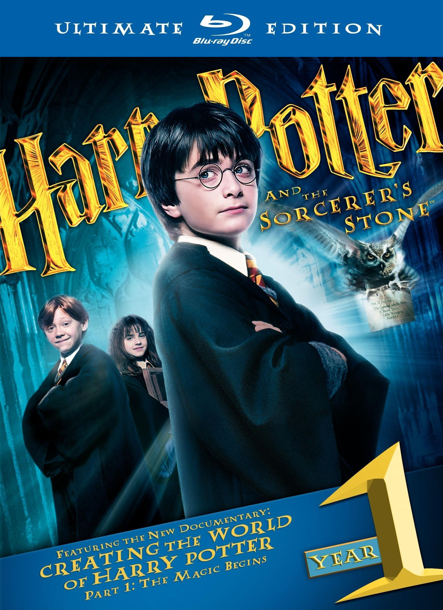

Xush kelibsiz!
Garri Poter kitobi
Londonlik oddiy bola Garri Potter, 11 yoshda, u ikkita kuchli sehrgarning
etim o'g'li ekanligini va o'zini sehrli kuchga ega ekanligini bilib oladi.
Hogvarts jodugarlar va sehrgarlik maktabida Garri aql bovar qilmaydigan
sarguzashtlarning bo'ronigatushib qoladi. U Quidditch - aerobatikani o'rganadi,
jonli shaxmat buyumlari bilan ajoyib o'yin o'ynaydi,uni yo'q qilishni istagan
Dark sehrgar bilan uchrashadi.
kitob haqida kino
treyleri pastda!
